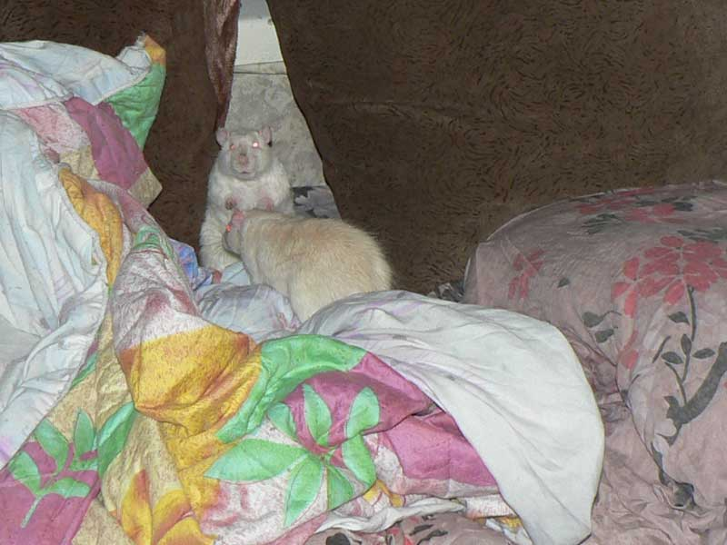

Митрофан: — Здравствуйте... Аник и Октябрь, если не ошибаюсь?
Митрофан: — Лучше пойду домой, на кухню...
— Тут пиво наливают!

Аник: — А зачем этот монитор на пол поставили? Upgrade, да?

Аник: — А вот и Таня пришла!

— Хозяева нужны, чтобы по ним забираться повыше!

Старый мудрый Дюк Нюкем.

Мотя у нас Копчёный и нелюдимый некрысимый:
— Это кто такой ко мне подошёл?!
Аник: — Ну, не хочешь общаться, так я пошёл.

Мотя: — Кажись, пронесло, уходит...
Аник: — Какие-то странные крысы у нас дома завелись...

Старички Джон Ди и Дюк Нюкем.
Октябрь и Аник уже почти дружат. А как сначала бегали :-)
Джон что-то совсем полысел. Дюк тоже, но поменьше. И ведь к врачу не отвезёшь, дикие...

Вот! Вот из-за такого я покупал зеркалку! Это называется "глубина резкости".
А мыльница в таких условиях фокусируется на решётке.
Дюк такой задумчивый...

Не знаю, откуда взялась такая засветка, но получилось даже как-то высокохудожественно.